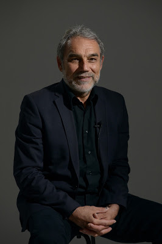

姿勢跑法的創始人羅曼諾夫博士來台灣開課

羅曼諾夫博士(Dr. Nicholas Romanov)是「姿勢跑法」的創立者，曾擔任過兩屆奧運教練，分別在二〇〇〇年的雪梨奧運與二〇〇四年的雅典奧運。此外，有不少他所訓練出的選手也參加了二〇〇八年北京奧運。他的訓練的選手中也有不少好手即將參加二〇一六里約奧運。
我之所以會認識姿勢跑法與博士，是因為喬福瑞（Joe Friel）的《鐵人三項訓練聖經》這本書。當我讀到書中探究跑步技術這一章節時，才短短幾頁的篇幅就讓我極為驚嘆：「原來如此簡單的跑步動作中竟還有那麼多學問！」這些學問，勾起了我濃厚的興趣，「我想瞭解更多細節」的欲望就此一發不可收拾。
所以當我知道喬福瑞寫在書中的知識是向尼可拉斯．羅曼諾夫博士(Dr. Nicholas Romanov）學來的時候，我馬上到亞馬遜網站訂了羅曼諾夫博士的所有著作，包括Pose Method of Running、Pose Method of Triathlon以及技術教學DVD。
那已經是五年多前的事了……我記得當時還在服兵役，剛拿到原文書後每天晚上就寢熄燈前，我都窩在床上讀博士的書，就像拿到武功祕籍般的心情，每翻過一頁都覺得興奮。當時部隊每天是早上六點半集合，為了練功常常凌晨四點多就爬起來練跑，想要實踐書中的理論。在那段邊讀邊練的過程中，也不斷向身旁認識的每一位跑者推薦這本書，但他/她們大都卡在語言的隔閡，無法領略到本書的妙用，所以暗暗發誓一定要把這本書給翻譯出來。
退伍後，我非常幸運，在臉譜出版社文瓊、麗真姐與逸英姐的大膽賞識下，讓完全沒有翻譯經驗的我來當這本書的譯者。接了這份重大且神聖的工作之後，我也同時很怕自己翻得不好，讓台灣讀者無法領略其中的真義，所以想找個安靜的處所閉關專心翻譯。開明的父母，沒有給我找工作的壓力，支持我的決定，所以我重返花蓮，租了間小屋，花了四個月的時間，在編輯淑鈴與文瓊的協助下，終於把它完成了，事後也獲得許多跑者的回饋。
因為《跑步，該怎麼跑》（Pose Method of Running）這本書就此跟羅曼諾夫博士結下緣份。分別在2012年的夏天與2015年的春天，有幸跟著博士在台灣和大陸巡迴演講，跟他討教了不少游泳、自行車騎乘與跑步技術的學問，甚至討論我所熱愛的中國哲學。因為博士，我也從中找到運動科學與中國思想中的相應之處。
在各方的努力下，終於把羅曼諾夫博士邀來台灣開課了，他即將在9/21抵台，在台灣待八天，這次博士會開三種課程。
第一種是：姿勢跑法的講座，講座的主題為「羅曼諾夫博士教你怎麼跑得更快、更遠與更不易受傷」，分別在台北、新竹與台南各有一場。第二種課程是一整天的「跑姿診療」。第三種則是「姿勢跑法教練認證課程 Level 1」包括「跑姿診療」、「線上認證考試」與「Pose Method®官方證書」，有興趣的朋友可以參考看看：
■ 詳細資訊與報名網址：
●兩天的「姿勢跑法教練認證課程 Level 1」詳細資訊：http://www.don1don.com/shop/store/product/1334
● 一天的「跑姿診療課程」詳細資訊：
http://www.don1don.com/shop/store/product/1346
●姿勢跑法講座(台北場)：http://www.don1don.com/shop/store/product/1345
●姿勢跑法講座(新竹場)：http://www.don1don.com/shop/store/product/1347
●姿勢跑法講座(台南場)：http://www.don1don.com/shop/store/product/1348
羅曼諾夫博士是位運動科學家，也是美國、英國和俄國鐵人三項國家隊的技術指導顧問，跟著他巡迴演講期間，我看到他用ipad上寫詩與繪製教學圖稿，用美麗的俄文在筆記本上寫札記，他曾鑽研《老子》、《莊子》和《論語》，在分享會上時常引用先秦思想家的話來說明跑步技術的本質在「順應自然」。我一直記得他在二零一二年離開台灣前跟我說了一段話：
“This is not about what I think, or what you think, or what other coaches think. It’s about what nature thinks. And I just think what nature thinks.“
這段話的意思，就如同他在演講中多次提到的：姿勢跑法不是他「發明」的，他只是「發現」後再把它歸納整理出來而已。
經過一翻努力，希望這次能在台灣留下更多他所發現的成果……！